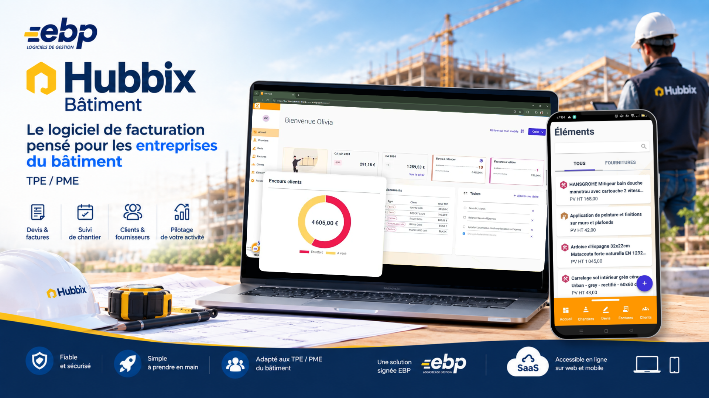
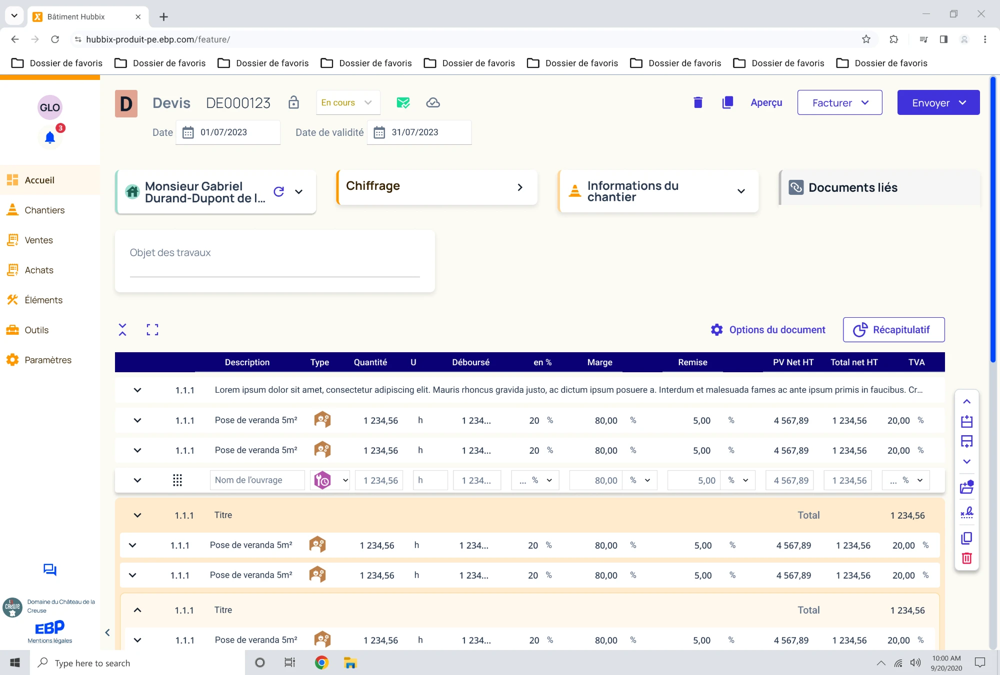
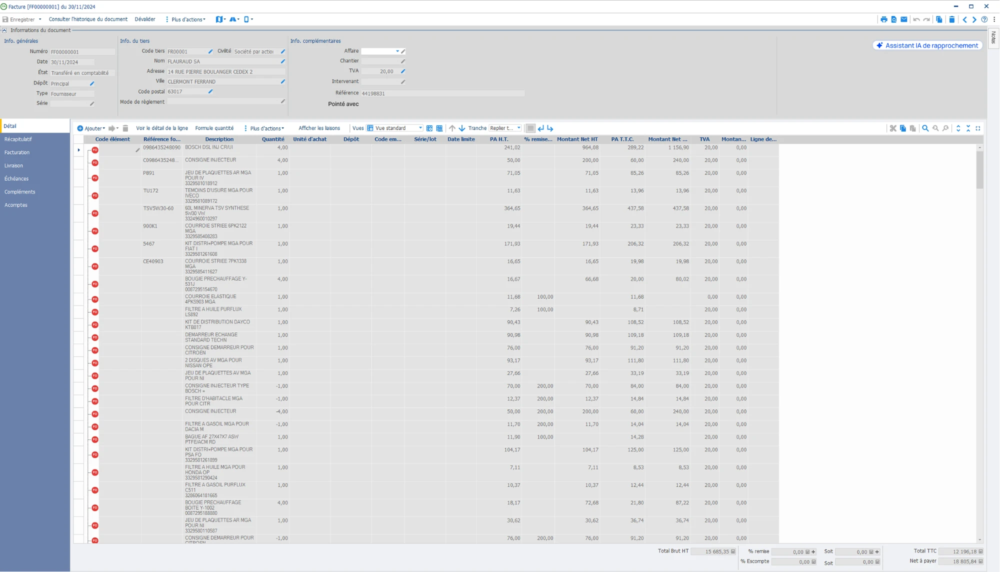
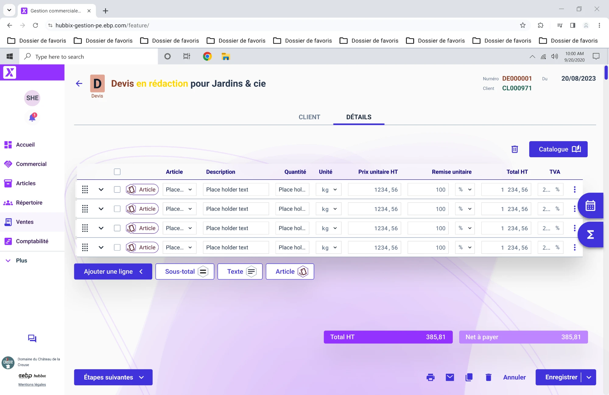
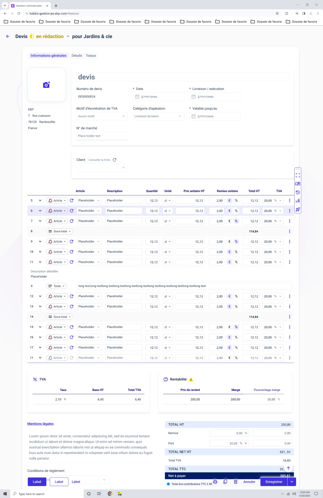

Concevoir de zéro une nouvelle expérience SaaS pour les professionnels du bâtiment

En 2022, j'ai rejoint le lancement de Hubbix Bâtiment, un SaaS conçu de zéro pour les TPE et PME du bâtiment, en remplacement progressif d'une solution historique on-premise, Open Line.
J'étais responsable de l'ensemble du périmètre UX/UI, au sein d'une équipe de 13 personnes : 1 PO, 1 chargé de projet, 3 consultants métier, 4 développeurs et 4 testeurs qualité. J'ai pris en charge la démarche UX de bout en bout, de la discovery à l'amélioration continue.
En 2 ans, le produit est passé de la discovery au lancement : 30 Early Adopters l'ont éprouvé avant la sortie et ~50 écrans responsive ont été conçus. Après le lancement, la baisse progressive des tickets support a été le signe que le produit devenait plus compréhensible et plus autonome.
Open Line, la solution historique, répondait de moins en moins aux attentes des utilisateurs. Le nouveau produit devait être accessible sur desktop et mobile, simple à prendre en main, assez puissant pour les spécificités du bâtiment, conforme aux contraintes fiscales et réglementaires françaises, et assez attractif pour conquérir de nouveaux clients.
L'enjeu : simplifier une activité complexe sans simplifier à l'excès le métier.
Pendant près de deux ans de discovery, accompagnée au début par le Lead Designer, j'ai défini la stratégie UX et mené des interviews auprès d'un paneliste et de clients internes EBP. J'ai ensuite animé des ateliers de co-conception avec le produit, le développement, la qualité, le marketing, le commerce et les consultants métier.
L'enjeu était autant de comprendre les utilisateurs que de faire converger l'équipe autour d'une compréhension commune du problème.
Journey map construite en atelier à partir des interviews : ce que fait un artisan de la prise de contact à la clôture, avec quoi, et où l'administratif coince.
L'administratif se fait le soir et le week-end, une fois la journée de chantier terminée : chaque minute gagnée sur le devis et la facturation compte.


Open Line Bâtiment Hubbix BâtimentPour l'éditeur de devis et de factures, l'idée naturelle était de reprendre la grille de la gestion commerciale existante. En l'analysant, j'ai constaté qu'elle était puissante mais complexe, et peu adaptée à l'expérience visée pour le bâtiment. J'ai étudié les solutions concurrentes et construit une proposition différente.

Les tests menés à la suite des interviews ont montré que les utilisateurs souhaitaient retrouver toutes les informations du devis sur un seul et même écran.
Ils ont aussi mis en évidence une limite de la grille de la gestion commerciale : elle ne permettait pas une « saisie au kilomètre », c'est-à-dire taper tout à la suite, aidé par les raccourcis clavier et la tabulation.
Cette grille était une référence interne : il fallait convaincre mon manager (Lead Designer) et les équipes de gestion commerciale. J'ai défendu ma proposition en m'appuyant sur :
J'ai réduit la hauteur des lignes pour afficher plus d'informations, et introduit des chevrons pour développer les descriptions, une navigation de cellule en cellule, une barre de mise en forme, ainsi que des sections et des groupes repliables. L'éditeur est devenu un véritable espace de construction du document commercial, plus fluide, plus lisible et plus rapide.
Il y a eu un vrai travail sur la grille du devis Bâtiment pour que tout se fasse au clavier : la touche Tab pour naviguer dans la page, les flèches directionnelles et d'autres raccourcis pour enchaîner la saisie.
J'ai aussi apporté de la flexibilité grâce à la télécommande, qui agit sur la ligne survolée, et aux options du document, qui permettent de personnaliser et d'alléger la grille en masquant certaines colonnes.
Essayer le prototype interactif de la grille (sur ordinateur) →
Ces composants n'existaient pas dans la gestion commerciale. J'ai dû les intégrer au Design System tout en gardant la cohérence de la gamme Hubbix, ce qui a demandé de nombreuses itérations et discussions avec les équipes.
Pour la création d'une facture, j'avais d'abord conçu un stepper. Les tests utilisateurs ont montré que cette navigation par étapes rendait le processus moins naturel et la compréhension globale du document plus difficile. Je l'ai remplacé par un écran unique, organisé en composants dépliables, pour garder une vision d'ensemble du document.
Le choix s'est révélé durable : quelques années plus tard, l'équipe de gestion commerciale a également pris le parti de tout centraliser sur une même page.

Avant Quelques années plus tardJ'ai conçu environ 50 écrans responsive, chaque fonctionnalité étant travaillée avec la PO, la PM, les consultants métier et les développeurs. Chaque semaine, j'animais un point maquettes pour recueillir tôt les contraintes techniques, vérifier la pertinence métier et éviter les mauvaises surprises au développement.
Tous les quinze jours, une Design Review avec la PO et un développeur vérifiait la cohérence entre les maquettes et le produit développé, avec des User Stories correctives lorsque c'était nécessaire.
J'ai participé à l'organisation d'un programme de 30 utilisateurs pendant environ un mois et demi, pour tester le produit en conditions réelles et en autonomie. Je cherchais à répondre à quatre questions :
Les utilisateurs comprennent-ils naturellement le produit ?
Quelles fonctionnalités essentielles manquent au produit ?
Quelles attentes doivent être traitées en priorité ?
L'organisation est-elle capable de déployer, accompagner et supporter correctement le produit ?
Leurs retours ont directement influencé la roadmap : les relances par e-mail et l'intégration des factures de situation ont notamment été repriorisées.
Le produit étant bien avancé, j'ai réduit la conception UI pour me concentrer sur l'observation des usages, avec Microsoft Clarity puis Heap. J'ai ainsi identifié de nouveaux pain points et proposé des améliorations fondées sur les comportements observés. J'ai constaté une baisse progressive des tickets support, signe que le produit devenait plus compréhensible et plus autonome.
J'ai ensuite milité pour généraliser ces pratiques d'observation dans l'équipe design et pour croiser les données produit, support, commerce et data.
Mon rôle est progressivement passé de :
« Comment concevoir cette fonctionnalité ? »
« Quel problème dois-je résoudre, pourquoi, et comment faire évoluer le produit dans la durée ? »
J'y ai appris à défendre une vision sans perdre la capacité d'écoute, et à considérer le design comme un outil de décision produit, pas seulement comme une étape de conception.